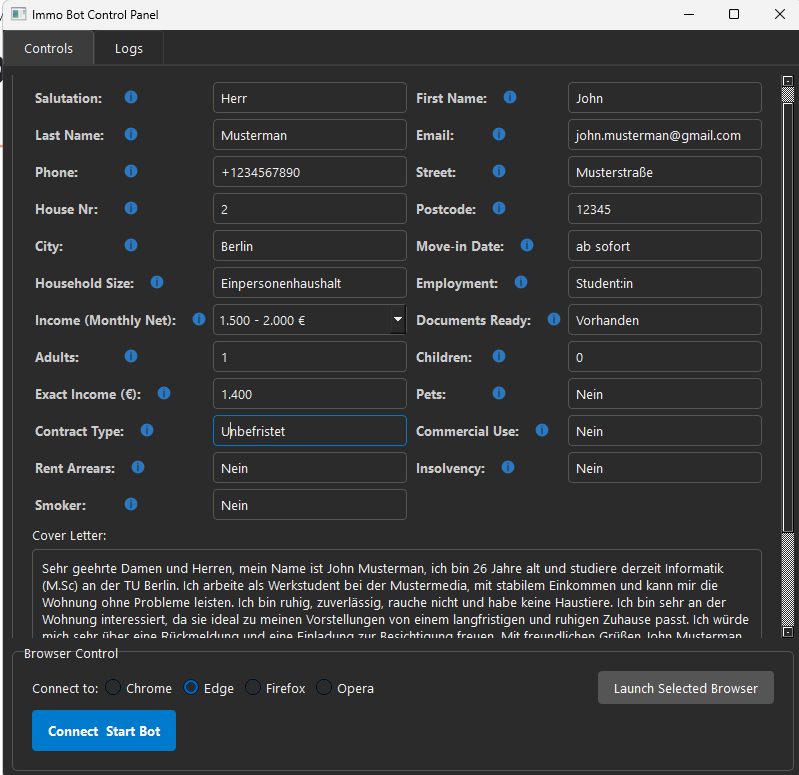
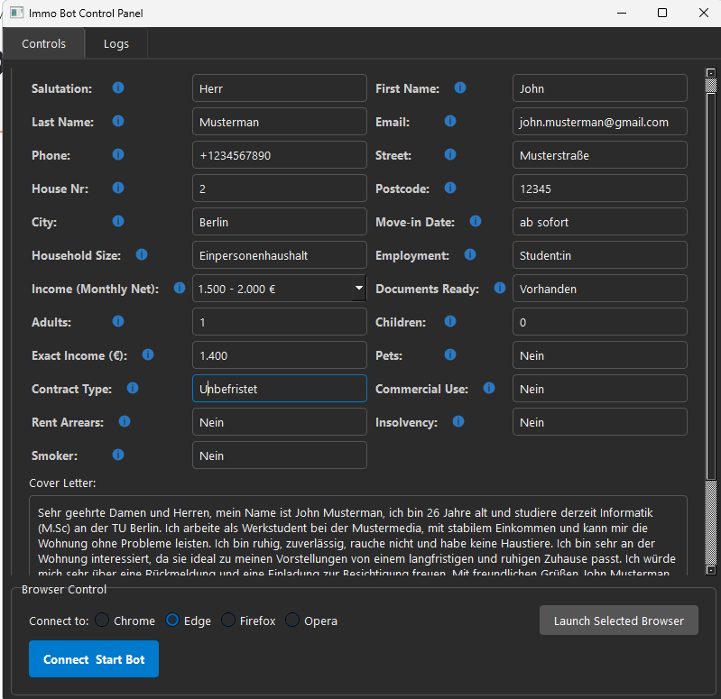

AI and Software
 

ImmoScout24 Bot Automator with AI Captcha Solver
Windows-friendly GUI that attaches to Chrome/Edge/Firefox, watches ImmoScout24 search pages for new listings, auto-fills your profile/cover letter, and sends messages. Includes a built-in local CAPTCHA solver and robust logging, retry queues, and persisted config for smooth, hands-off outreach.
Multi-Agent RAG System with LangGraph
A LangGraph-orchestrated, multi-agent app that blends web research and document-grounded RAG into one chat. A planner coordinates a web agent (Tavily) and a file-RAG agent; responses are merged, cited, and streamed via a Streamlit UI with support for Gemini/ChatGPT providers.
LLM Safe Auto Code Generation Tool using LangChain
Full Stack tool that turns natural-language specs into Python, then auto-lint/security-scans and self-fixes issues in a feedback loop. Streamlit UI, multi-LLM (Gemini/GPT) support, Pylint + Bandit integration, and optional dynamic analysis modules for deeper runtime checks.
Website Blocker
Simple Tkinter GUI for managing a blocklist by editing the Windows hosts file. Lets you block/unblock domains, view current blocked sites, and safely back up the original hosts file—handy for focus, parental control, or quick testing.
Oracle Database Data Automation Pipeline
Config-driven Python pipeline that runs SQL against Oracle and writes results into pre-formatted Excel templates. Supports variable expansion, batch/combination runs, and seamless report generation—cutting manual reporting time and errors to near zero.
Captcha Image Solver Neural Network model
End-to-end PyTorch notebook that generates/loads CAPTCHA images, trains a model to recognize alphanumeric strings, and exports a .pth checkpoint. Used as the local CAPTCHA solver in my ImmoScout24 bot; includes preprocessing, augmentation, and evaluation.
Brain Lession Classification Model
Deep-learning pipeline for classifying brain MRI lesions (e.g., meningioma/glioma/pituitary). Includes preprocessing, augmentation, training and evaluation utilities with clear metrics and plots for model comparison.
Mix of Other Projects
Breast Cancer Classification
End-to-end ML pipeline for the Breast Cancer Wisconsin dataset: EDA, feature scaling/selection, and multiple classifiers with cross-validation. Reports precision/recall, ROC-AUC, and calibrated probabilities for transparent, reproducible results.

Godot Platformer Game
Playable 2D platformer in Godot 4.2 with a clean state-machine player controller (jump buffering, coyote time, wall-jumps). Uses tilemaps, animation trees, and signals; structured for easy extension and export.
SkyWatched, Social Media for Movies and TV Shows
University group project: a social app for movies/TV using the AT Protocol. Built with Svelte + TypeScript, Prisma + PostgreSQL, Tailwind/shadcn, and TMDB integration—full-stack, modern, and federated-social ready.
Death Stacks Board game implemented in Haskell
Functional implementation of the Death Stacks board game with pure, immutable game state and solid move validation. Includes a simple CLI, search-based AI (minimax/alpha-beta), and clean module organization.